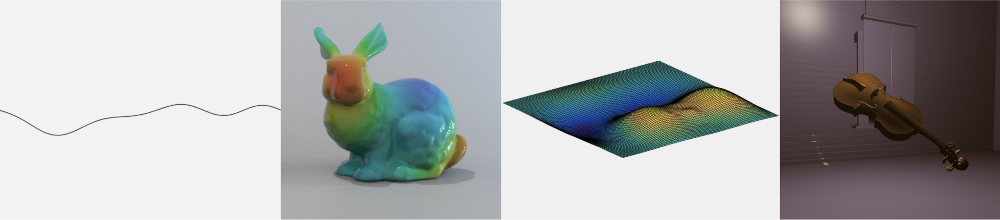

Research
Virtual Acoustics
Virtual acoustics encompasses spatial audio and environmental acoustics technologies. Spatial audio
technologies place virtual sounds in three dimensions using binaural or multichannel methods
while enviromental acoustics technologies incorporate the sound properties of
a physical space into an audio signal. In my research, I build
physics-based simulations of spatialized sound and
enviromental acoustics in order to improve these technologies.

Physical Modeling Sound Synthesis
Physical modeling sound synthesis is a numerical technique that generates sound from
mathematical descriptions of acoustic systems. Compared to abstract methods of sound synthesis, such as additive, wavetable,
and FM synthesis, physical modeling sound synthesis appears to be superior for producing more physically accurate sound and
offering more intuitive user control. With abstract methods, several control parameters must be tuned
correctly in order to create physically accurate sound. Physical modeling methods, on the other hand, typically contain
fewer control parameters and thus are easier to configure correctly. Moreover, since users are generally more familiar with physical
control parameters (e.g. object size and material properties) than they are with abstract control parameters (e.g. the
indices of frequency modulation), they can more easily predict the effect that each parameter will have on the
sound.
